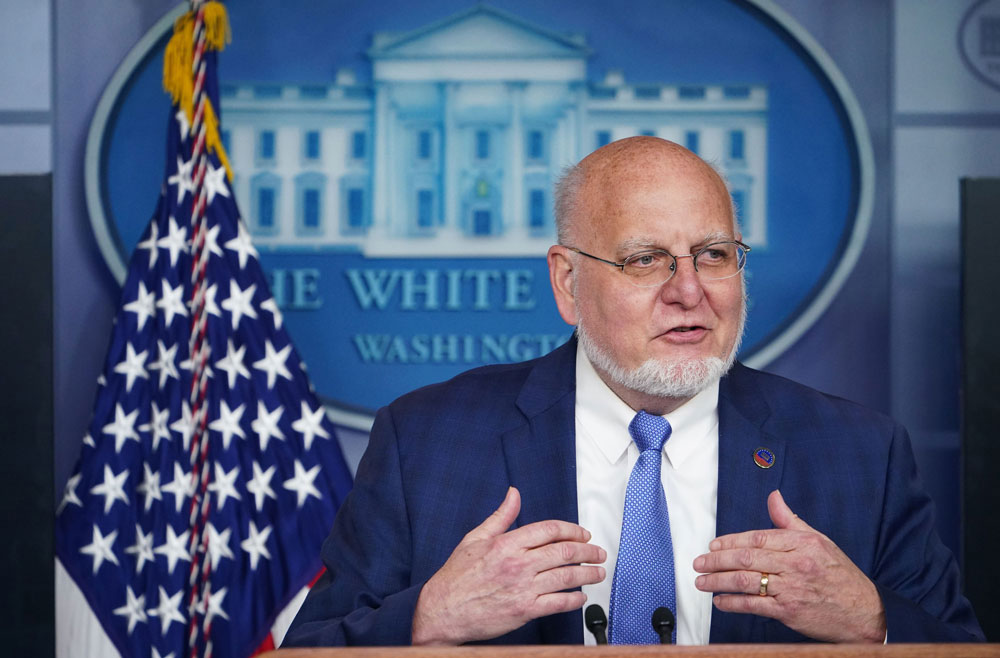
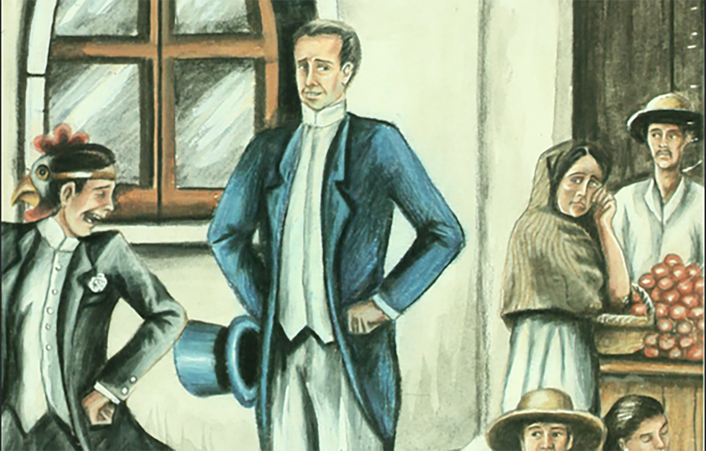
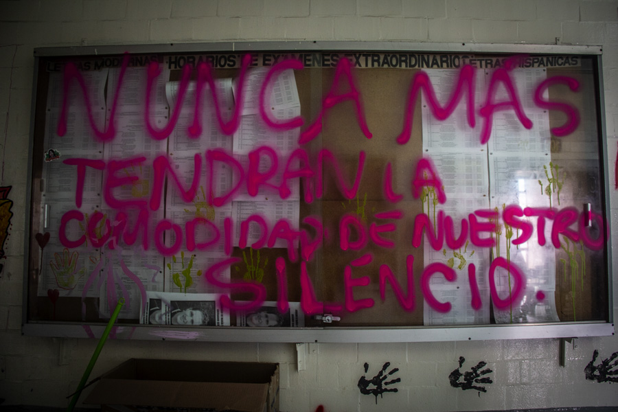

Exdirector de los CDC dice, sin pruebas, que el origen del nuevo coronavirus que causa covid-19 fue un laboratorio en China
(CNN) — A pesar de la falta de pruebas claras, el exdirector de los Centros para el Control y la Prevención de Enfermedades de EE.UU. (CDC, por sus siglas en inglés), el Dr. Robert Redfield, dijo en un clip de un documental de CNN publicado este viernes que cree que el nuevo coronavirus comenzó a transmitirse en el otoño de 2019 y que el virus puede haberse originado en un laboratorio en China.
Hablando con el corresponsal médico jefe de CNN, el Dr. Sanjay Gupta, durante una entrevista para el documental «Covid War: los doctores de la pandemia hablan», Redfield sugiere que los casos de coronavirus comenzaron a propagarse antes de la cronología de la pandemia, e indica su creencia en una teoría no probada y con carga política sobre cómo surgió el coronavirus.
«Si tuviera que adivinar, este virus comenzó a transmitirse en algún momento en septiembre, octubre, en Wuhan», le dijo Redfield a Gupta en un clip que se transmitió el viernes en
CNN New Day. 'Esos son mis propios sentimientos.Y solo opinión.Ahora puedo tener opiniones».
Redfield, un virólogo que dirigió los CDC bajo el mandato del expresidente Donald Trump, dijo que cree que el virus se originó dentro de un laboratorio en China y «escapó», no necesariamente intencionalmente.
No hay evidencia clara que apoye la teoría de la 'fuga de laboratorio', aunque ha jugado un papel continuo en conspiraciones y especulaciones, incluidas las declaraciones de Trump.
'Sabes, soy del punto de vista de que todavía creo que la ideología más probable de este patógeno en Wuhan fue de un laboratorio.Ya sabes, escapó.Otras personas no creen eso.Está bien.La ciencia eventualmente lo resolverá», le dijo Redfield a Gupta, y señaló que» eso no implica ninguna intencionalidad».
'No creo que esto de alguna manera viniera de un murciélago a un humano.Y en ese momento en el tiempo, el virus llegó al ser humano, se convirtió en uno de los virus más infecciosos que conocemos en la humanidad para la transmisión de humano a humano.
'Normalmente, cuando un patógeno pasa de un animal a un humano, le toma un tiempo descubrir cómo volverse cada vez más eficiente en la transmisión de humano a humano.Simplemente no creo que esto tenga sentido biológico».
Se espera que un equipo de la Organización Mundial de la Salud que explora los orígenes del coronavirus en Wuhan, China, publique un informe de sus hallazgos pronto, pero ya ha dicho que un incidente relacionado con el laboratorio es «extremadamente improbable».
Las causas más probables de transmisión del virus que causa el covid-19 a los humanos, dijo el equipo de la OMS, son la introducción a través de una especie huésped intermediaria o la transmisión a través del comercio de productos congelados.También ha investigado la transmisión de dirección de un reservorio animal al humano.
Mientras tanto, los funcionarios chinos y los medios estatales han promovido una teoría sin fundamento, llamada de 'origen múltiple', que sugiere que la pandemia puede haber comenzado en varios lugares del mundo, incluso en un laboratorio militar de EE.UU.
Coronavirus de Wuhan Covid-19
Posted On: 2021-03-26T00:00:00



Content Date: 2021-03-26
Download Date: 2021-05-13
Document ID: L0C04C7LC